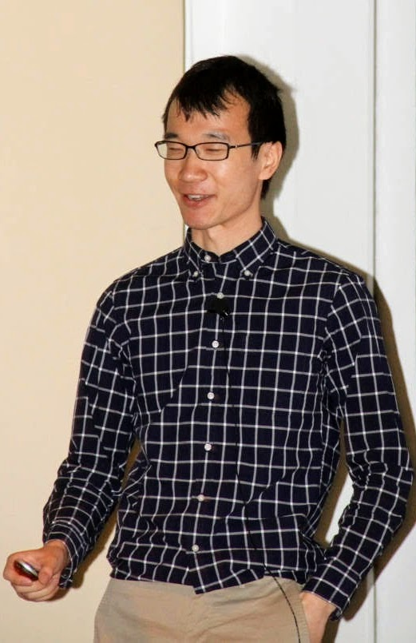

My name is Yuxin (pronounced you-SEEN). I am a paleoclimate scientist in training, aspiring to combine quantitative methods, geochemical analysis, and sea-going campaigns to illuminate past and future variabilities of the climate system.
Currently, I am a postdoctoral fellow at Georgia Institute of Technology and a Guest Investigator at Woods Hole Oceanographic Institution. I work with Jean Lynch-Stieglitz at Georgia Tech and Jake Gebbie at WHOI on using the MOM6 ocean model and foraminifera δ18O to better understand the wind field changes during the last glacial maximum.
During 2022-2025, I was a postdoctoral scholar at the University of California, Santa Barbara. I worked as part of the CycloAstro Project, a multi-institutional project that integrates science from paleoclimatology, geophysics, and astronomy. My project focuses on using Bayesian methods to detect the astronomical forcing of the paleoclimate system. My postdoc advisor was Lorraine Lisiecki.
I hold a Ph.D. in Earth and Environmental Sciences from Columbia University/Lamont-Doherty Earth Observatory. My doctoral research involves the sedimentary reconstruction of ocean circulation and climate instability, focusing on the causes and responses of the Atlantic Meridional Overturning Circulation perturbations. My research methods include uranium-series geochemistry and the compilation of existing uranium-series data. My Ph.D. advisor was Jerry F. McManus.
I hold a B.S. in Geological Sciences from the University of Southern California, with a minor in Computer Science. My undergraduate research activities include Suess Effect in benthic forams (with Delia Oppo and Jake Gebbie, Woods Hole Oceanographic Institution), mid-Holocene ENSO variation using forward modeling (with Julien Emile-Geay, University of Southern California), and mass balance and isostasy modeling (with Scott Paterson, University of Southern California).
In my free time, I enjoy sand volleyball, pottery, and surfing.